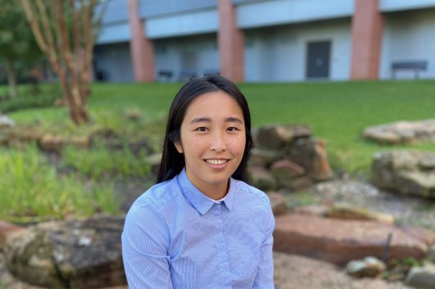

Welcome!
 I am a neuroscience postdoctoral researcher with Alexander Fleischmann at Brown University. I graduated with a PhD in neuroscience during the summer of 2024 from the University of Texas Health Science Center in Houston under the guidance of Kristin Eckel-Mahan. I earned my BS in neuroscience from Trinity University in 2018.
My thesis research focused on the intersection of circadian biology, metabolism and neuroscience(1). In the last year of my PhD I conducted chronobiology research in the Gad Asher Lab at the Weizmann Institute in Rehovot Israel under the Fulbright Scholarship(2).
My graduate experience was fruitful. I received over $50,000 in private funding and over $100,000 in goverment funding. This included the NIH F31 training grant, the Fulbright Scholarship and the John J Kopchick Fellowship. In addition to my first author paper, my collaboration with others led to my inclusion on 6 academic papers. I also recevied the opprotunity to present my work as a talk at two major conferences (SRBR 2022 and the Neural Control of Appetite 2022 Keystone Symposia).
Awards & Fellowships
- President's Research Scholarship - MD Anderson UTHealth GSBS, 2023
- Fulbright US Student Program Open Study Award, 2023
- John J Kopchick Research Award 2021 - MD Anderson UTHealth GSBS, 2023
- F31 Ruth L. Kirschstein Predoctoral Individual National Research Service Award, 2021
- Dee S. & Patricia Osborne Endowed Scholarship in the Neurosciences - Neuroscience Research Symposium, 2021
Recent Publications
-
Van Drunen, R., Fekry, B., Haichao, W., Dai, Y., Bravo Santos, R., Shivshankar, S., Zhao, Z., Jiaqian, W., Qingchun, T. and Eckel-Mahan, K. (2024) Cell type-specific regulation of the circadian clock by BMAL1 in the paraventricular nucleus: implications for regulation of energy balance. Cell Reports vol 43(7).
-
Dandavate, V., N. Bolshette, Van Drunen, R., G. Manella, H. Bueno-Levy, M. Zerbib, I. Kawano, M. Golik, Y. Adamovich, and G. Asher. (2024). Hepatic BMAL1 and HIF1alpha regulate a time-dependent hypoxic response and prevent hepatopulmonary-like syndrome. Cell Metabolism, 36(9): p. 2038-2053.e5.
-
Fekry, B., Ribas‐Latre, A., Van Drunen, R., Bravo Santos, R., Shivshankar, S., Dai, Y., Zhao, Z., Yoo, S.H., Chen, Z., Sun, K., Sladek, F.M. and Eckel-Mahan, K. (2022). Hepatic circadian and differentiation factors control liver susceptibility for fatty liver disease and tumorigenesis. The FASEB Journal, 36(9), p.e22482.
-
Van Drunen, R. and Eckel-Mahan, K. (2021) Circadian Rhythms of the Hypothalamus: from Function to Physiology. Clocks & Sleep;3(1):189–226.